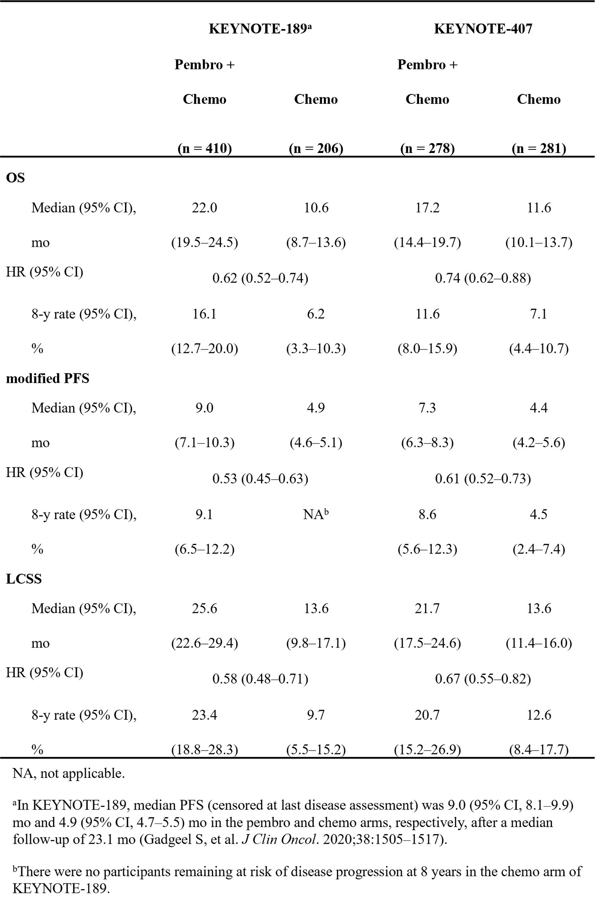

Introduction
免疫检查点抑制剂改变了转移性非小细胞肺癌（NSCLC）的治疗格局，并改善了患者生存。在Ⅲ期KEYNOTE-189研究中，帕博利珠单抗联合化疗一线治疗非鳞状转移性NSCLC患者较单纯化疗显著延长总生存期（OS）（HR=0.49，95%CI：0.38-0.64；P<0.001）；在Ⅲ期KEYNOTE-407研究中，帕博利珠单抗联合化疗一线治疗鳞状转移性NSCLC患者较单纯化疗同样显著延长OS（HR=0.64，95%CI：0.49-0.85；P<0.001），且上述获益在5年随访后仍得以维持。本次报告KEYNOTE-189和KEYNOTE-407的9年和8年随访生存结局。
Methods
研究纳入既往未经治疗、经组织学或细胞学确诊的转移性非鳞状NSCLC（KEYNOTE-189）或鳞状NSCLC（KEYNOTE-407）患者。KEYNOTE-189研究按2∶1、KEYNOTE-407研究按1∶1的比例将患者随机分配，分别接受帕博利珠单抗200 mg或安慰剂治疗，每3周1次（Q3W），最多35个周期。此外，KEYNOTE-189研究患者接受4个周期的培美曲塞联合顺铂或卡铂治疗，随后接受培美曲塞维持治疗；KEYNOTE-407研究患者接受4个周期的卡铂联合紫杉醇或白蛋白结合型紫杉醇治疗。KEYNOTE-189和KEYNOTE-407研究结束后，患者可转入KEYNOTE-587研究进行长期随访。KEYNOTE-587研究的主要终点为OS；次要终点包括改良的无进展生存期（PFS），定义为从随机分组至根据RECIST v1.1标准判定疾病进展（PD）或死亡的时间，并在患者最后一次确认存活的日期进行删失。研究还开展了事后分析，评估肺癌特异性生存期（LCSS）。
Results
在KEYNOTE-189研究中，616例患者被随机分配至帕博利珠单抗联合化疗组（n=410）或化疗组（n=206），其中分别有44例和12例患者转入KEYNOTE-587研究。在KEYNOTE-407研究中，559例患者被随机分配至帕博利珠单抗联合化疗组（n=278）或化疗组（n=281），其中分别有34例和15例患者转入KEYNOTE-587研究。从随机分组至数据截止日期（ 2025年11月10日）的中位时间：KEYNOTE-189研究为9.1年（范围：7.8～9.6年），KEYNOTE-407研究为8.5年（范围：7.9～9.1年）。OS、改良的PFS及LCSS均显示帕博利珠单抗联合化疗较单纯化疗具有更优的生存结局（表）。在KEYNOTE-189研究中，帕博利珠单抗联合化疗组和化疗组的8年OS率（95%CI）分别为16.1%（12.7%-20.0%）和6.2%（3.3%-10.3%），HR=0.62（95%CI：0.52-0.74）。在KEYNOTE-407研究中，两组的8年OS率（95%CI）分别为11.6%（8.0%-15.9%）和7.1%（4.4%-10.7%），HR=0.74（95%CI：0.62-0.88）。KEYNOTE-189和KEYNOTE-407研究的改良PFS HR（95%CI）分别为0.53（0.45-0.63）和0.61（0.52-0.73）；LCSS HR（95%CI）分别为0.58（0.48-0.70）和0.67（0.55-0.82）。
Conclusions
在KEYNOTE-189和KEYNOTE-407研究中位随访时间分别达到9年和8年后，帕博利珠单抗联合化疗在转移性NSCLC患者中仍持续带来持久且具有临床意义的生存获益。帕博利珠单抗联合化疗所显示的长期生存获益支持其作为转移性NSCLC的标准治疗方案。
